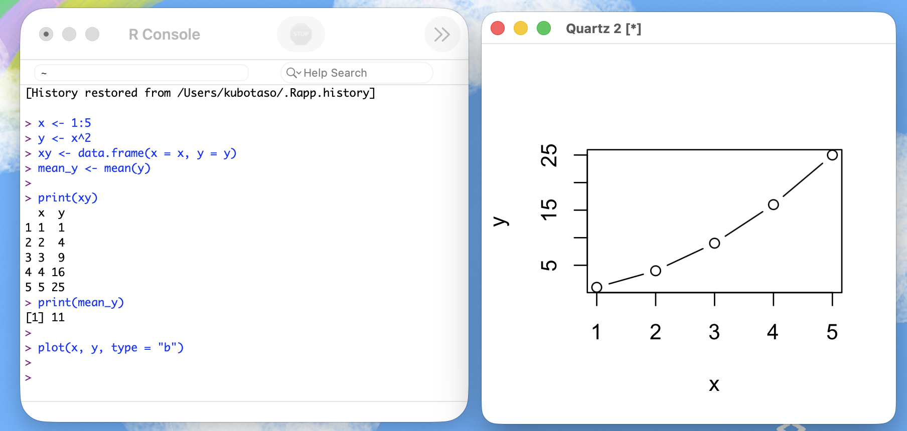
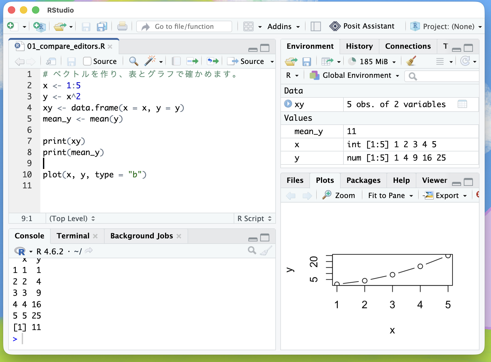
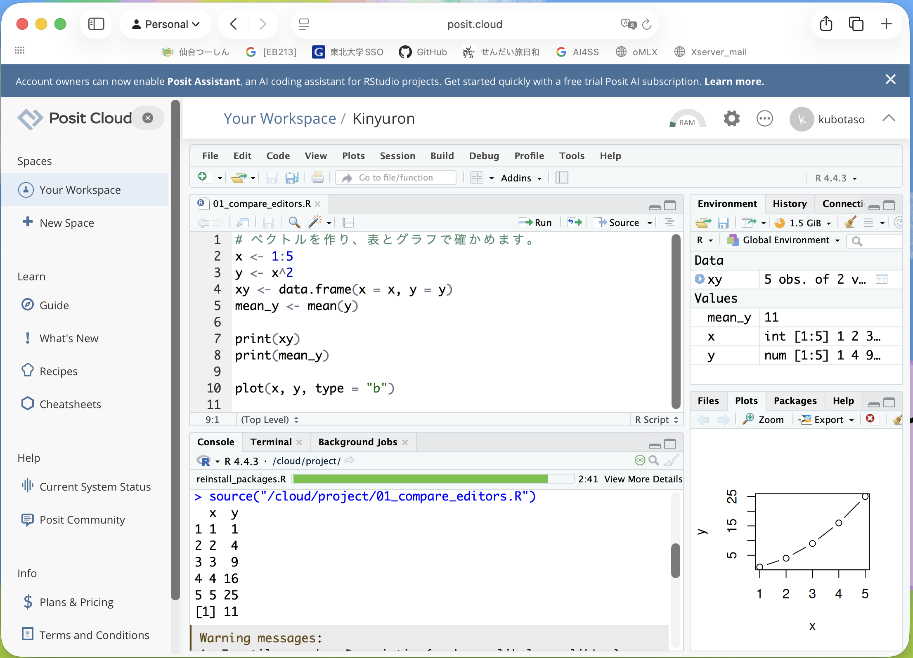
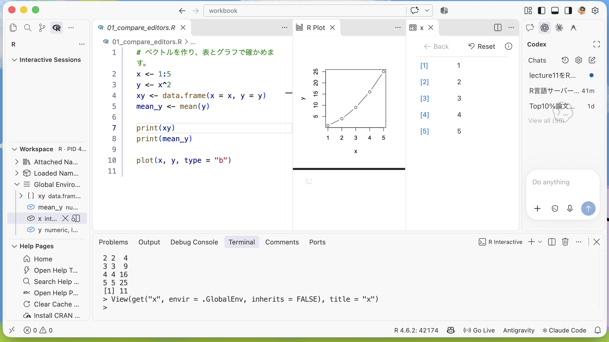
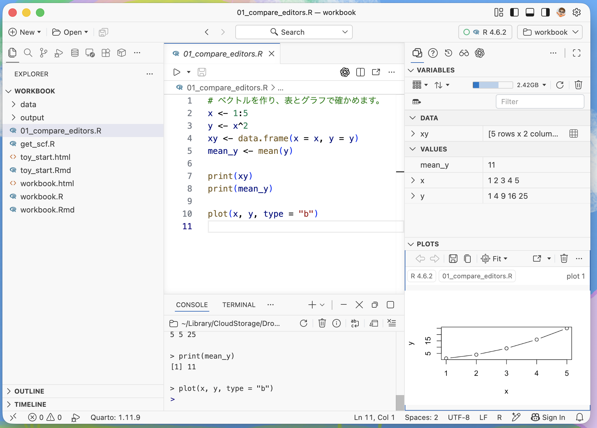
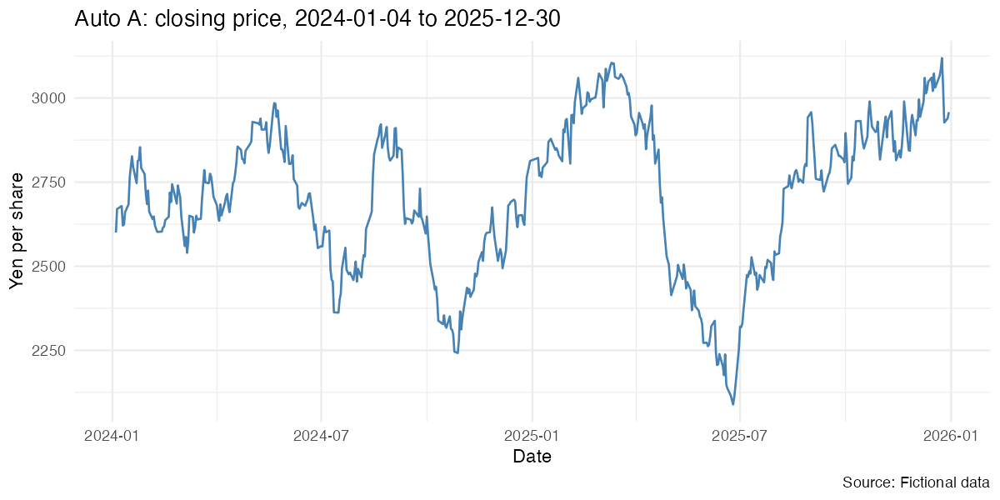
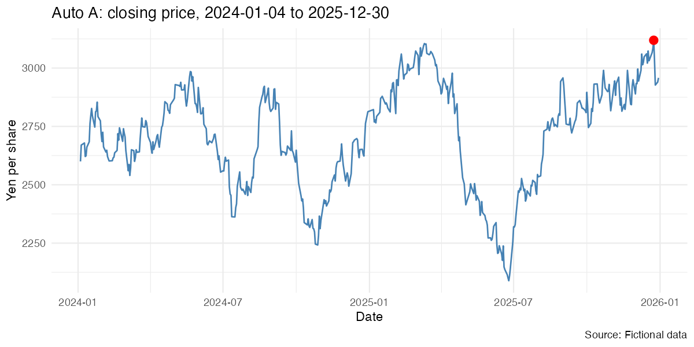
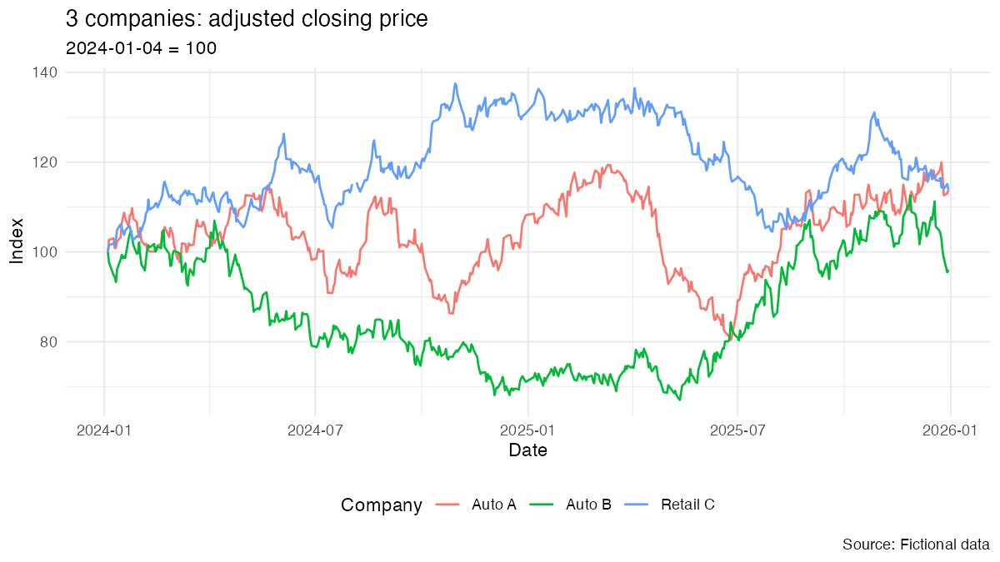
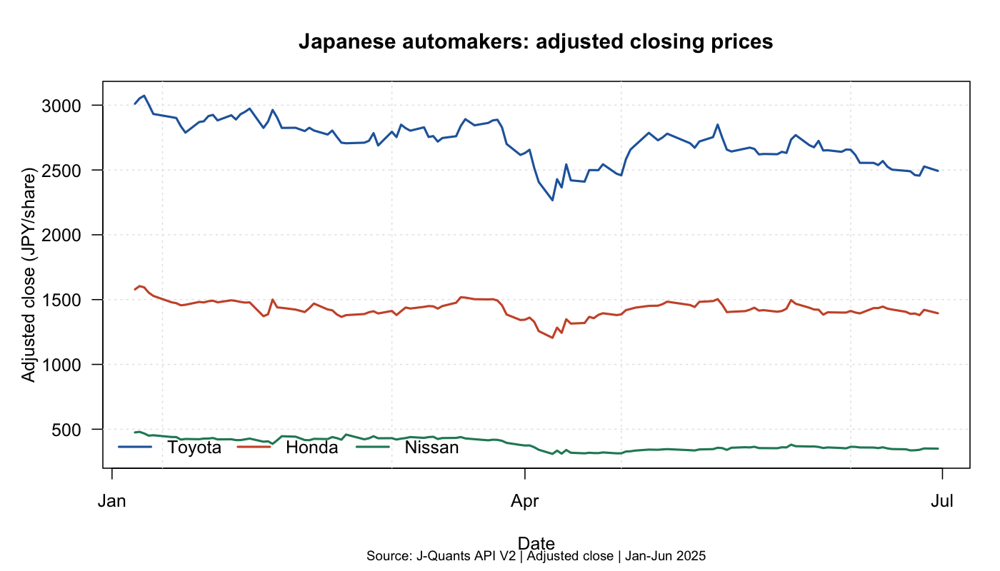
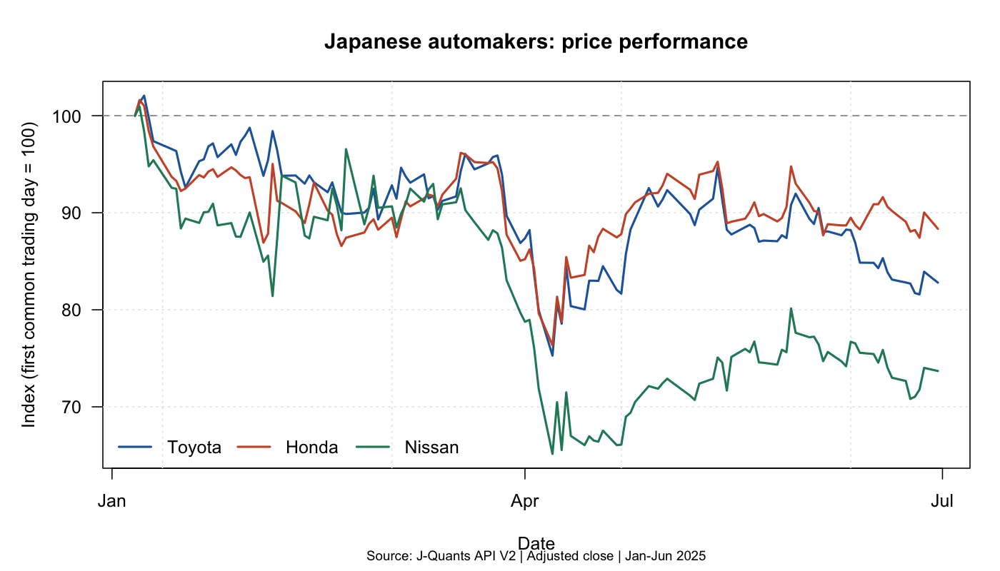

R Markdown、Pythonとの文法の違い、株価CSVの読み込み、選択・変数作成・銘柄別集計、手計算との照合
金融論
Rは、統計計算や作図のための言語であり、プログラムを実行するソフトウェアでもあります。RStudio、VS Code、Positronは、コードを書き、Rに実行させ、結果を見るためのアプリです。どのアプリでも、計算を担当するR本体を使います。
以下の4枚は、同じコードで表とグラフを作った画面です。1から5までの数を
x、その2乗を y とし、表 xy と平均
mean_y
を作っています。計算結果はどれも同じで、平均は11です。アプリによって、コードや結果の見せ方、使い始めるまでの準備が違います。
R本体に付属する画面で、MacではR.app、WindowsではRGuiと呼ばれます。Consoleにコードを入力すると、その場に計算結果が出ます。グラフは別のウィンドウに表示されます。
RはterminalからCLI（文字で操作する方法）でも使えます。terminalで
R と入力すると対話モードが開き、>
の後にコードを入力して実行できます。計算結果も同じterminalに表示されます。
長所は、専用のエディタを追加せずに、短い計算をすぐ試せることです。Console中心の画面なので、長いコードを編集しながら変数や表を見比べる作業には、次のような専用のエディタが向いています。

コードはSource、計算結果はConsole、変数一覧はEnvironment、グラフはPlotsに表示されます。表を開いて中身を確認する機能もあります。
長所は、Rの分析に使う機能がまとまっていて、コードと結果を見比べやすいことです。短所は、一つのウィンドウを複数の領域に分けるため、小さな画面ではコードやグラフの表示が狭くなることです。

Posit Cloudは、クラウド上のRStudioをブラウザから使うサービスです。自分のPCにRやRStudioをインストールせずに始められるのが長所です。一方、インターネット接続が必要で、無料プランには計算時間や使える資源に上限があります。

R拡張を追加すると、これまでPythonやMarkdownで使ってきたVS CodeでRも扱えます。計算結果はRのターミナル、変数一覧はWorkspace Viewer、グラフはPlot Viewerに表示されます。
長所は、使い慣れたエディタで複数の言語や文書を扱えることです。短所は、R拡張や関連するパッケージの準備が必要なことです。コードの入力補完やグラフの表示には、それぞれの機能に合った設定が必要になります。

VS Codeをもとに、RとPythonでのデータ分析向けに作られたアプリです。計算結果はConsole、変数一覧はVariables、グラフはPlotsに表示されます。表はData Explorerで閲覧できます。
長所は、RとPythonの両方で、変数・表・グラフを確認する機能が最初から組み込まれていることです。短所は、拡張機能の配布元がVS Codeと異なり、使い慣れた拡張機能の一部を利用できないことです。

金融論 フォルダの中に、今回の作業用フォルダ
Lecture11 を作ります。配布資料の workbook/
の中から、次のファイルと株価CSVを Lecture11
にコピーします。
金融論/
└── Lecture11/
├── workbook.Rmd
├── workbook.R
├── 01_compare_editors.R
├── 02_base_r_and_tidyverse.R
├── 03_jquants_auto.R
├── 04_ggplot_prices.R
└── data/
├── prices.csv
└── prices_short.csvprices.csv と prices_short.csv
は、第6回で使った仮想の株価データです。基本演習は手元のCSVで進められます。実行結果は
Lecture11/output/ に保存されます。
VS
Codeの「ファイル」→「フォルダーを開く」で、金融論/Lecture11
を開きます。左のファイル一覧から workbook.Rmd
を開くと、演習の文章とコードが表示されます。上から順にchunkを実行します。同じcodeを一度に実行できる
workbook.R
もあります。「やってみる」の答え合わせは、Codexに頼めます。
R本体とVS CodeのR拡張の準備や設定は、Codexに頼めます。
.R は、Rのコードを書いたファイルです。VS
Codeでは、コードを選んでR拡張の「Run
Selection/Line」で実行すると、Rのターミナルに結果が出ます。変数はWorkspace
Viewer、グラフはPlot Viewerで見られます。
実行時に「Run R Code」という画面で、コードを実行する場所の選択肢が出る場合があります。「Create R terminal」を選ぶと、画面下部のTerminalにRが起動します。この講義では、このRのターミナルでコードを実行します。
workbook.R
は、「実行する」のcodeだけを並べたscriptです。terminalで
Rscript workbook.R
と打つと、上から全部が実行されます。第5回の python pv.py
と同じ使い方です。
R
Markdown（.Rmd）は、Markdownの文章の間にRのcodeを置いたfileです。codeは、次のようなchunkに書きます。
## 複利
100円を年10%で20年間預けます。
```{r}
100 * 1.1^20
```chunkは1つずつ実行できます。この講義のVS Codeでは、数値はRのターミナル、図はPlot Viewerに表示されます。RStudioでは、結果をchunkの下に表示する設定も使えます。実行して作った変数はRの中に残り、次のchunkから使えます。
新しいR
processでKnitすると、上のchunkから順に全部を実行し、文章・code・結果を並べたHTMLを作ります。再現確認では新しいR
processを使います。consoleからrenderを呼ぶだけでは、既存の環境を参照する場合があります。
notebookの Restart と Run All にあたる操作です。.Rmd
のfile自体には文章とcodeだけが入り、結果はHTMLの側に残ります。
VS Codeでは、R拡張を入れるとchunkの上に Run Chunk
が出ます。そこからchunkごとに実行できます。RStudioでも同じ
.Rmd を開けます。
Knitするときの作業ディレクトリは、その .Rmd
があるfolderです。今回は 金融論/Lecture11
です。data/prices.csv は、その中の data
フォルダにあるファイルを指します。VS
Codeでchunkを実行するときの作業ディレクトリも、getwd()
で確かめられます。表示されたパスが Lecture11
で終わっていれば、同じ相対pathを使えます。
パッケージのインストールや更新は、画面上の操作でも行えます。入口はアプリによって違います。
| 環境 | パッケージ管理の画面 |
|---|---|
| RStudio・Posit Cloud | PackagesタブのInstallで追加、Updateで更新できます。一覧のチェックボックスで読み込むこともできます。 |
| VS Code＋R拡張 | Help PagesのInstall CRAN Packageから追加できます。同じ行のUpdate Installed Packagesで、インストール済みパッケージをまとめて更新できます。 |
| Positron | サイドバーのPackagesペインで、パッケージを検索して追加したり、更新したりできます。RとPythonの両方に対応しています。 |
install.packages("tidyverse")：パッケージをインストールします。library(tidyverse)：インストール済みのパッケージを読み込みます。update.packages()：パッケージを更新します。packageVersion("tidyverse")：パッケージの版を調べます。sessionInfo()：Rと読み込んだパッケージの情報を表示します。dplyr::filter()：パッケージ名を指定して関数を使います。パッケージのインストール・更新・設定や、エラーの解消はCodexに頼めます。「必要なRパッケージを入れて、Knitできるようにして」のように依頼できます。
| Python | R | |
|---|---|---|
| 代入 | A = 1 |
A <- 1 |
| 値をまとめる | [2, 3, 4]（list） |
c(2, 3, 4)（vector） |
| 最初の要素 | D[0] |
D[1] |
| 範囲外の番号 | error | D[4] は NA、D[0] は空 |
| 1から5まで | range(1, 6) |
1:5 |
| 3ずつ増やす | range(1, 14, 3) |
seq(1, 13, by = 3) |
| べき乗 | 1.1 ** 2 |
1.1^2 |
| 繰り返す範囲 | : と字下げ |
{ } |
| 3つ目以降の条件 | elif |
else if |
| 型を調べる | type() |
class() |
文字列どうしの + |
つなげる | error |
| 欠損 | NaN、None |
NA |
| 関数を作る | def f(x): と return |
f <- function(x) { } |
Rの番号は1から始まります。範囲外の番号を書いてもerrorで止まらないので、番号を間違えたときに気づきにくくなります。
class() で値の型を調べます。Pythonの type()
にあたります。
class(3) # "numeric"
class("3") # "character"
class(TRUE) # "logical"
as.numeric("3") + 3 # 6numeric は数値、character
は文字列、logical は TRUE または
FALSE です。"3"
は数字の形をした文字列なので、as.numeric()
で数に変換してから足します。
v1 <- c(2, 3, 4)
v2 <- c(6, 4, 2)
v1 * v2 # 12 12 8
v1 * 2 # 4 6 8vectorどうしの計算は、同じ位置の要素どうしで行います。Pythonのlistに
* 2
をすると、listが2回繰り返されました。Rの表の列もvectorなので、prices$C * 100
と書くと各行の終値から100株分の金額をまとめて計算できます。pandasの列の計算と同じです。
長さの違うvectorを足すと、短いほうが先頭に戻って繰り返し使われます。c(1, 2, 3) + c(10, 20)
は 11 22 13 になり、warningが出ます。
1から5までを順に足し、途中の合計を表示します。Pythonで使った
total = total + i の例を、Rで書くと次のようになります。
total <- 0
for (i in 1:5) {
total <- total + i
print(total)
}結果は順に
1、3、6、10、15
です。i に1から5までが1つずつ入り、そのたびに
total に足されます。
Pythonの range(1, 6) に対応するのが、Rの
1:5
です。Rでは終わりの5も含みます。3ずつ増やす場合は、seq(1, 13, by = 3)
と書くと 1, 4, 7, 10, 13 になります。
for (i in 1:5) の ( )
に繰り返しの条件を書き、実行する部分を { }
で囲みます。Pythonの :
と字下げにあたる部分です。Rの字下げは読みやすくするためのもので、動作には関係しません。繰り返しの途中の値を表示するときは
print() を使います。
点数が60点以上なら "Pass"、それ以外なら
"Fail" と表示します。
test <- 61
if (test >= 60) {
print("Pass")
} else {
print("Fail")
}この例では "Pass" が出ます。test >= 60
が成り立つと最初の { } の中を実行し、成り立たなければ
else の中を実行します。
60点ちょうどの場合を分けると、3通りになります。Pythonの
elif にあたる書き方が、Rの else if です。
test <- 60
if (test > 60) {
print("Pass")
} else if (test == 60) {
print("Just barely Pass")
} else {
print("Fail")
}この例では "Just barely Pass"
が出ます。<- は代入、==
は等しいかどうかの比較です。比べる記号はPythonと同じで、>、<、>=、<=、==、!=
を使います。
最初の10年は年10%、残りの10年は年20%で、100円を20年間運用します。
Fuku <- 100
for (i in 1:20) {
if (i <= 10) {
Fuku <- Fuku * 1.1
} else {
Fuku <- Fuku * 1.2
}
}
Fuku # 1605.977i
が1から10の間は1.1を掛け、11から20の間は1.2を掛けます。20年後の金額は約1,605.98円です。Pythonで使った
for year in range(1, 21): と同じ計算です。
20年間ずっと年10%なら、100 * 1.1^20
と書いても計算できます。結果は約672.75円です。Pythonのべき乗
** は、Rでは ^ と書きます。
future_value <- function(principal, rate, years) {
principal * (1 + rate)^years
}
future_value(100, 0.10, 2) # 121function( ) で関数を作り、<-
で名前を付けます。principal は元金、rate
は年利、years は年数です。Pythonの
def future_value(principal, rate, years):
と同じように、計算に使う値を受け取ります。Rでは { }
の最後の行の値が返ります。
返された値は、変数に入れて別の計算に使えます。
x <- future_value(100, 0.10, 2)
x * 2 # 242将来受け取る金額を、今の価値に直す関数を作ります。amount
は受取額、rate は割引率、years
は受け取るまでの年数です。
present_value <- function(amount, rate, years) {
amount / (1 + rate)^years
}
present_value(110, 0.10, 1) # 1001年後の110円を10%で割り引くと、現在価値は100円です。
1年後から5年後まで、毎年1万円を受け取る場合は、各年の現在価値を
for で足します。割引率は5%です。
total <- 0
for (t in 1:5) {
total <- total + present_value(10000, 0.05, t)
}
round(total, 2) # 43294.77t
が1から5へ変わるので、受け取りが先の金額ほど長く割り引かれます。合計は約43,294.77円です。Pythonの例と同じく、関数が1回分を計算し、for
が5回分を合計しています。
base Rとtidyverseは、同じRの中で使う道具です。base RはR本体に備わる基本機能を指します。tidyverseは、データの読み込み・整理・作図に使う追加のパッケージをまとめたものです。パッケージとは、関数などをひとまとめにして配布する仕組みです。
Rは、統計解析のために作られた言語Sを受け継いで生まれました。R本体には、数値の計算や表の操作、統計分析、作図の機能が用意されました。その上に、利用者や開発者がパッケージで機能を追加してきました。
その後、Hadley Wickhamらが、データの整理や作図を扱いやすくするパッケージを開発しました。表の操作を担うdplyr、作図を担うggplot2などです。共通の考え方と書き方で使えるこれらのパッケージ群は、2016年にtidyverseという名前でまとめられました。
この経緯から、同じ処理にも複数の書き方があります。base Rでは、表の行や列を直接指定する書き方がよく使われます。tidyverseでは、「行を選ぶ」「列を作る」「集計する」といった操作を、名前の付いた関数で順に並べます。書き方の違いは、同じRの中で使っている道具と、その設計の違いから生まれています。
たとえば、仮想の株価の表をtidyverseで銘柄ごとに分け、R本体の関数で終値の平均を求められます。1つのスクリプトの中で、両方の道具を組み合わせて使います。
データフレームは、行と列からなる表をプログラムの中で扱うためのデータの形です。Excelのシートのように、列に名前があり、行にデータが並びます。
株価データなら、1行は「ある銘柄の、ある1日」です。日付、銘柄コード、終値、出来高を別々の列に入れると、同じ行にその日の情報がそろいます。
各列は同じ長さで、列ごとに型を持ちます。日付の列、文字列の銘柄コード、数値の終値を、1つの表にまとめられます。数値の列はベクトルとして計算できるので、全行の終値をまとめて1,000で割る、といった操作ができます。
CSVは表をファイルに保存する形式です。読み込むと、Rのメモリの中にデータフレームができます。この表に対して、行を選ぶ、列を追加する、平均を求める、といった処理を行います。
tidyverseでよく使う表の形式は、tibble（ティブル）です。Rの
data.frame
を拡張したもので、表示すると行数・列数・各列の型が分かります。tibble()
で作るほか、read_csv()
でCSVを読み込んだときもtibbleになります。
表を操作するdplyrの関数は、tibbleと通常の data.frame
の両方に使えます。次の比較では、同じ表を操作した結果を比べるため、data.frame()
で作った表を両方の書き方で使います。
第6回の仮想の株価データから、Auto Aの3日分を使います。まず、R本体の
data.frame() で表 d を作ります。
d <- data.frame(
Date = as.Date(c("2024-08-01", "2024-08-02", "2024-08-05")),
Code = c("01110", "01110", "01110"),
C = c(2454, 2492, 2467),
Vo = c(20507300, 28425400, 27465800)
)
print(d)Date は日付、Code
は銘柄コード、C は終値（円）、Vo
は出来高（株）です。
| Date | Code | C | Vo |
|---|---|---|---|
| 2024-08-01 | 01110 | 2,454 | 20,507,300 |
| 2024-08-02 | 01110 | 2,492 | 28,425,400 |
| 2024-08-05 | 01110 | 2,467 | 27,465,800 |
この表 d を、base
Rとtidyverseの両方で扱います。tidyverseの関数は、次の行で読み込みます。
library(tidyverse)日付と終値の2列を取り出します。
# base R
print(d[, c("Date", "C")])
# tidyverse
print(d |> select(Date, C))base Rの [行, 列]
は、コンマの前で行、後ろで列を指定します。前を空けると全行が対象になります。列名は文字列で指定します。
tidyverseの select()
は、取り出す列の名前を並べます。|>
は左の表を右の関数に渡す記号です。ここでは、select(d, Date, C)
と同じ意味です。どちらも日付と終値の2列が出ます。
教科書では、同じように処理をつなぐ記号として %>%
もよく使われます。この例の |> を %>%
に置き換えても、同じ結果になります。この講義のコードは
|> で統一しています。
終値が2,470円以上の日を取り出します。
# base R
print(d[d$C >= 2470, ])
# tidyverse
print(d |> filter(C >= 2470))d$C は表 d の終値の列です。base
Rでは、その列で判定した条件を [行, 列]
の行の側に置きます。列の側を空けると全列を残します。
tidyverseでは、filter()
の中に行を選ぶ条件を書きます。どちらも、終値が2,492円の2024年8月2日だけが残ります。
終値を千円単位にした列を作ります。
# base R
base_result <- d
base_result$C_thousand_yen <- base_result$C / 1000
print(base_result)
# tidyverse
tidy_result <- d |> mutate(C_thousand_yen = C / 1000)
print(tidy_result)base Rでは、表をコピーし、$
で新しい列に値を入れます。tidyverseでは、mutate()
に新しい列の名前と計算式を書きます。作った表を tidy_result
に入れています。
どちらにも、2.454、2.492、2.467という列が加わります。元の表
d と、円単位の列 C はそのまま残ります。
3日間の終値の平均を計算します。
# base R
print(mean(d$C))
# tidyverse
print(d |> summarise(mean_close = mean(C)))計算はどちらもR本体の mean() が担当します。base
Rの例は数値を返し、tidyverseの summarise() は
mean_close
という列を持つ1行の表を返します。値はどちらも、(2,454 + 2,492 + 2,467) ÷
3 = 2,471円です。
ここまでの比較は、02_base_r_and_tidyverse.R にもまとめてあります。続いて、同じ操作を3銘柄・2年分のCSVに使います。
library(tidyverse)
prices <- read_csv(
"data/prices.csv",
col_types = cols(Date = col_date(), Code = col_character())
)
nrow(prices) # 1464
ncol(prices) # 14
glimpse(prices)3銘柄・488日分で、1,464行あります。1行は1つの銘柄の1日です。日付は実際の営業日で、価格は仮想の値です。read_csv()
はCSVをtibbleとして読み込みます。pandasでCSVをDataFrameとして読む操作にあたります。
col_types で、Date
を日付、Code
を文字列として読みます。銘柄コードの先頭の0を保つためです。ほかの列は数値として読み込まれます。
pandasとtidyverseの操作は、次のように対応します。
| 操作 | pandas | R（tidyverse） |
|---|---|---|
| 読む | pd.read_csv() |
read_csv() |
| 行数・列数 | df.shape |
nrow()、ncol() |
| 型と先頭の値 | df.info()、df.head() |
glimpse() |
| 列を選ぶ | df[["A", "B"]] |
select(A, B) |
| 行を絞る | df[df["A"] == 1] |
filter(A == 1) |
| 列を作る | df.assign(C = ...) |
mutate(C = ...) |
| 群ごとに集計する | df.groupby("A").agg(...) |
group_by(A) と summarise(...) |
| 欠損を数える | df.isna().sum() |
colSums(is.na(df)) |
小さなCSV prices_short.csv
の終値は、"2,467"
のように桁区切りのコンマが付いています。いったん文字列として読み、parse_number()
で数値に変換します。
short <- read_csv(
"data/prices_short.csv",
col_types = cols(Date = col_date(), Code = col_character(),
C = col_character())
)
class(short$C) # "character"
short <- short |> mutate(C = parse_number(C))
class(short$C) # "numeric"
short |> select(Date, Code, C)parse_number("2,467") は 2467
になります。終値の空欄は NA
のままです。銘柄コードは計算する数ではなく名前として使うので、"01110"
などの文字列を保ちます。
n_distinct(prices$Code) # 3
n_distinct(prices$Date) # 488
prices |> count(Code)n_distinct()
は異なる値の数を数えます。銘柄コードは3種類、日付は488日あります。count(Code)
では、銘柄ごとの行数がどれも488と分かります。
prices |> count(Code) は、表 prices を
count() に渡して銘柄ごとに数える書き方です。
prices1 <- prices |> select(Date, Code, C, AdjC, Vo)14列から、次の5列を残します。
| 列 | 内容 |
|---|---|
Date |
日付 |
Code |
銘柄コード。01110はAuto A、02220はAuto B、03330はRetail C |
C |
終値（円） |
AdjC |
株式分割を調整した終値（円） |
Vo |
出来高（株） |
Auto Bは2025年4月1日に1株を2株に分割しています。AdjC
は分割前の価格も分割後と同じ1株の単位にそろえた値です。期間を通じた平均には
AdjC を使います。
auto_a <- prices1 |> filter(Code == "01110")
nrow(auto_a) # 488条件に合うAuto
Aの488行が残ります。銘柄コードは文字列なので引用符で囲み、値が等しいかを
== で調べています。
colSums(is.na(prices1))
prices1 |> filter(is.na(C))C と AdjC
に欠損が1つずつあります。同じ行にある、2024年8月5日のRetail
Cの値です。この日は売買が成立せず、終値は
NA、出来高は0です。終値がないことと、取引された株数が0であることを、それぞれ別の列で表しています。
prices2 <- prices1 |> mutate(C_thousand_yen = C / 1000)3日分の比較と同じ計算を、3銘柄・2年分の終値に使います。千円単位の列
C_thousand_yen が加わり、元の C
は円単位のまま残ります。
prices2 <- prices2 |>
mutate(Name = case_when(
Code == "01110" ~ "Auto A",
Code == "02220" ~ "Auto B",
Code == "03330" ~ "Retail C",
TRUE ~ "その他"
))case_when() は上から条件を調べ、最初に当てはまった行の
~
の右の値を入れます。ここでは銘柄コードに対応する名前を付けています。
prices2 <- prices2 |>
mutate(volume_group = if_else(Vo >= 10000000,
"1000万株以上", "1000万株未満"))if_else(条件, 当てはまるとき, 当てはまらないとき)
で2つに分けます。ここでは、その日の出来高で行を分類しています。
前の営業日の調整済み終値で当日の値を割り、1を引くと収益率になります。100を掛けて%で表示します。Pythonの
shift(1) にあたるのが、dplyrの lag()
です。
returns <- prices2 |>
arrange(Code, Date) |>
group_by(Code) |>
mutate(
previous_close = lag(AdjC),
Change = (AdjC / previous_close - 1) * 100
) |>
ungroup()arrange()
で銘柄ごとに日付順に並べ、group_by()
で銘柄を分けます。lag(AdjC)
は、同じ銘柄の1つ前の行の値を返します。各銘柄の最初の行は、比べる前日の価格がないので
Change が NA
になります。価格が欠損した日は、その日と次の営業日の収益率が
NA になります。
Auto Bの株式分割の日を取り出します。
returns |>
filter(Code == "02220", Date == as.Date("2025-04-01")) |>
select(Date, AdjC, previous_close, Change)前日の調整済み終値は1,113.5円、当日は1,117円です。収益率は約0.31%です。調整済み終値を使うと、株式分割の前後を同じ株数の基準で比べられます。
price_summary <- prices2 |>
group_by(Code, Name) |>
summarise(
days = n(),
priced_days = sum(!is.na(AdjC)),
mean_adjusted_close = mean(AdjC, na.rm = TRUE),
.groups = "drop"
)
price_summarygroup_by() で銘柄ごとに分け、summarise()
で1銘柄1行へまとめます。n()
は行数、ここではCSVに記録されている日数です。priced_days
は調整済み終値がある日数です。
| Code | Name | days | priced_days | 調整済み終値の平均（円、小数第2位まで） |
|---|---|---|---|---|
| 01110 | Auto A | 488 | 488 | 2,703.98 |
| 02220 | Auto B | 488 | 488 | 1,296.36 |
| 03330 | Retail C | 488 | 487 | 4,077.83 |
na.rm = TRUE で欠損を除いて計算します。Retail
Cの平均には、価格がある487日分を使っています。.groups = "drop"
は、集計後の表にグループ分けを残さない指定です。
priced <- prices2 |> drop_na(AdjC)
nrow(priced) # 1463
priced |> count(Code)drop_na(AdjC)
は、調整済み終値が欠損している行を除きます。Auto AとAuto
Bは488行、Retail Cは487行になります。
CSVからAuto Aの同じ3日分を取り出し、最初に作った表 d
と比べます。
three_days <- auto_a |>
filter(Date >= as.Date("2024-08-01"), Date <= as.Date("2024-08-05"))
three_days |> select(Date, C)
mean(three_days$C) # 2471日付と終値は、比較に使った表 d
の3行と一致します。CSVから計算した平均も同じ2,471円になります。
mean(c(3872, 3914, NA))
mean(c(3872, 3914, NA), na.rm = TRUE) # 3893同じ3日間のRetail Cには、終値のない日が1日あります。通常の
mean() は NA を返します。欠損を除くと、(3,872
+ 3,914) ÷ 2 = 3,893円です。平均に使った日数は2日です。
dir.create("output", showWarnings = FALSE)
check_rows <- tibble(
step = c("all rows", "AdjC not NA", "Auto A"),
rows = c(nrow(prices), nrow(priced), nrow(auto_a))
)
write_csv(check_rows, "output/price_check_rows.csv")
write_csv(price_summary, "output/price_summary.csv")読み込んだ行数1,464、価格がある行数1,463、Auto
Aの行数488を保存します。銘柄別の平均も
output/price_summary.csv
に残ります。元のCSVと集計結果を見比べると、どの日の価格が平均に含まれているかを辿れます。
第6回では、PythonのmatplotlibでAuto
Aの終値を折れ線にし、3社の調整済み終値を初日100にそろえて比べました。同じCSVから、Rのggplot2でこの2枚を描きます。ggplot2はtidyverseに含まれるので、library(tidyverse)
で使えます。
auto_a は、先ほど銘柄コード 01110
で取り出した表です。横軸を日付 Date、縦軸を終値
C にします。
p_close <- ggplot(auto_a, aes(x = Date, y = C)) +
geom_line(color = "steelblue", linewidth = 0.6) +
labs(
title = "Auto A: closing price, 2024-01-04 to 2025-12-30",
x = "Date", y = "Yen per share",
caption = "Source: Fictional data"
) +
theme_minimal()
print(p_close)ggplot() に表を渡し、aes()
で列を軸に対応させます。Pythonの
ax.plot(auto_a["Date"], auto_a["C"])
にあたるのが、aes(x = Date, y = C) と
geom_line() の組み合わせです。
geom_line() は日付順に線を結びます。labs()
はタイトル・軸の名前・出典を付け、theme_minimal()
は背景や目盛りの見た目を整えます。図を構成する部品は +
でつなぎます。表の処理で使う |>
とは記号が変わります。

Auto Aの調整済み終値が最大の日を取り出します。Pythonの
idxmax() で最大値の行を探した例を、Rでは
slice_max() で書けます。
peak <- prices |>
mutate(csv_line = row_number() + 1L) |>
filter(Code == "01110") |>
slice_max(AdjC, n = 1)
peak |> select(Date, Code, AdjC, csv_line)row_number()
でCSVを読み込んだ順に1から番号を付けます。CSVの1行目は列名なので、1を足すとファイルの行番号になります。行を絞る前に番号を付けることで、元のCSVの位置が残ります。
最大値は2025年12月24日の3,119円で、data/prices.csv
の485行目です。ファイルの同じ行でも、日付・銘柄コード・価格を確認できます。
Auto Aは C と AdjC
が同じなので、先ほどの終値の折れ線にこの点を重ねられます。
p_peak <- p_close +
geom_point(data = peak, aes(y = AdjC), color = "red", size = 3)
print(p_peak)geom_point()
に最大値の表を渡すと、その日付と価格の位置に赤い点が加わります。線と点は、同じ図の部品として
+ で重ねられます。

prices2 には、3社の調整済み終値 AdjC
と会社名 Name
が入っています。銘柄ごとに日付順に並べ、各日の価格を最初の日の価格で割って100を掛けます。
indexed <- prices2 |>
arrange(Code, Date) |>
group_by(Code) |>
mutate(Index = AdjC / first(AdjC) * 100) |>
ungroup()first(AdjC)
は、それぞれの銘柄の最初の日の調整済み終値です。Index
が110なら、初日から10%上がっています。
p_index <- ggplot(indexed, aes(x = Date, y = Index, color = Name)) +
geom_line(linewidth = 0.6) +
labs(
title = "3 companies: adjusted closing price",
subtitle = "2024-01-04 = 100",
x = "Date", y = "Index", color = "Company",
caption = "Source: Fictional data"
) +
theme_minimal() +
theme(legend.position = "bottom")
print(p_index)aes(color = Name)
で会社ごとに線の色が変わり、凡例も付きます。Pythonでは for
で銘柄を1つずつ選んで線を重ねました。ggplot2では、会社名の列を色に対応させると、3社分の線をまとめて描けます。
最初の図の color = "steelblue"
は、線全体に決まった色を付ける指定です。2枚目の
aes(color = Name)
は、データの値に応じて色を分ける指定です。

2025年12月30日の値は、Auto AとRetail Cが113.8、Auto Bが96.0です。初日からの変化は、それぞれ13.8%の上昇、13.8%の上昇、4.0%の下落です。
ggsave()
にファイル名と図を渡すと、PNGとして保存できます。
dir.create("output", showWarnings = FALSE)
ggsave("output/ggplot_auto_a_close.png", plot = p_close,
width = 8, height = 4, dpi = 150)
ggsave("output/ggplot_auto_a_peak.png", plot = p_peak,
width = 8, height = 4, dpi = 150)
ggsave("output/ggplot_prices_index.png", plot = p_index,
width = 8, height = 4.5, dpi = 150)3枚の図は Lecture11/output/
で確認できます。型の変換、収益率の計算、CSVの読み込みから作図・保存までのコードは、04_ggplot_prices.R
にまとめています。
書き方の詳細は、ggplot2の公式資料の aes()、geom_line()、ggsave() で確認できます。
仮想の株価で使った読み方を、実在する自動車メーカー3社の比較に広げます。トヨタ自動車、ホンダ、日産自動車の2025年1〜6月の日次株価をJ-Quantsから取得します。
| 会社 | 証券コード | J-Quantsのコード |
|---|---|---|
| トヨタ自動車 | 7203 | 72030 |
| ホンダ（本田技研工業） | 7267 | 72670 |
| 日産自動車 | 7201 | 72010 |
3社は、J-Quantsの33業種では「輸送用機器」に分類されます。無料プランには12週間の遅れがあるため、この例では2025年上半期を使います。
J-Quantsで利用登録し、利用プランを選びます。この例は無料のFreeプランで取得できます。ログイン後、ダッシュボードの「API Keys」でAPIキーを発行し、コピーします。取得済みのキーがあれば、そのキーを使えます。
キーの保存先は、各回のフォルダをまとめている 金融論
の直下にある api_key.txt です。VS Codeで
金融論
フォルダを開くと、この場所にファイルを作成・編集できます。
金融論/
├── api_key.txt
└── Lecture11/
├── 03_jquants_auto.R
├── data/
└── output/api_key.txt に次の形で保存します。=
の右側を、発行されたAPIキーに置き換えます。ほかのAPIの設定が入っている場合は、別の行に追加できます。
JQUANTS_API_KEY=ここにコピーしたAPIキーLecture11
を作業場所にすると、03_jquants_auto.R
は1つ上のフォルダにある api_key.txt
から、この行のキーを読み込めます。APIキーは利用者を認証する情報なので、コードや提出物と分けて自分の手元に保存します。
保存後の接続確認は、Codexに頼めます。
金融論フォルダのapi_key.txtにJ-QuantsのAPIキーを保存したので、
Lecture11の03_jquants_auto.Rで3社の株価を取得できるか確認して。
キーの値は表示しないで。APIへの接続では、取得先のURL、銘柄や期間の条件、利用者を確認するAPIキーを送ります。J-Quants V2では、HTTPのGETという方法でデータを求めます。
トヨタの2025年上半期の株価なら、接続先は次の形になります。
https://api.jquants.com/v2/equities/bars/daily?code=72030&from=2025-01-01&to=2025-06-30/equities/bars/daily
が日次株価の取得先です。?
の後ろに銘柄コードと期間を付け、&
で条件をつないでいます。会社名や業種を取得するときは、取得先が
/equities/master に変わります。
APIキーは、リクエストに添えるヘッダーの x-api-key
に入れます。サーバーはキーから利用者と契約プランを確認します。スクリプトは
金融論/api_key.txt から読み込んだ値を送ります。
接続が成功すると、J-QuantsからJSONが返ります。その中の
data に、1日分ずつの株価が並んでいます。R本体の
url() で接続先とヘッダーを指定し、jsonliteパッケージの
fromJSON() でJSONをRのデータに変換します。
スクリプトの処理を1社分に絞ると、次のようになります。api_key
は、ファイルから読み込んだキーを入れる変数です。
address <- paste0(
"https://api.jquants.com/v2/equities/bars/daily",
"?code=72030&from=2025-01-01&to=2025-06-30"
)
connection <- url(address, headers = c("x-api-key" = api_key),
method = "libcurl")
body <- jsonlite::fromJSON(connection)
toyota <- body$databody は返答全体、body$data
はその中の株価の表です。続いて Date
を日付型に直し、日付順に並べると、CSVから読んだ表と同じように集計や作図ができます。
返答が複数ページに分かれると、続きの位置を示す
pagination_key が返ります。作例の fetch()
は、その値を付けて続きを取得し、1つの表にまとめます。接続処理を関数にしてあるので、同じ方法で3社を順番に取得できます。
返答にはHTTPステータスという番号も付いています。200は取得成功、401や403はキーや利用権限などの確認が必要な場合、429は短時間の依頼が多すぎる場合です。今回のスクリプトでは依頼の間を13秒あけ、無料プランの回数制限に合わせています。
取得できたら、会社名・銘柄コード・日付の範囲・行数を表で確かめます。今回の3社はそれぞれ119行で、2025年1月6日から6月30日までの価格が入っています。
03_jquants_auto.R
は、会社名と業種を確認し、調整済み終値を取得して2枚の図を作るスクリプトです。接続とJSONから表への変換を関数にまとめています。Lecture11/
を作業場所にして、次のように実行できます。
source("03_jquants_auto.R")図は output/jquants_auto_close.png と
output/jquants_auto_index.png
に保存されます。取得した株価と比較表も同じフォルダに残ります。
1枚目は、調整済み終値を円単位で重ねた図です。各社の価格の水準と、期間中の動きを見られます。

2枚目は、各社の調整済み終値を最初の日の値で割り、100を掛けた図です。3社に共通して価格がある119営業日を使い、2025年1月6日を出発点にしています。110なら初日より10%高く、90なら10%低い価格です。

6月30日の指数は、トヨタが82.8、ホンダが88.3、日産が73.7です。この期間は3社とも初日の100を下回り、下落率が最も大きいのは日産です。
線を描く部分では、R本体の plot() と lines()
を使います。plot()
でトヨタの線と座標軸を描き、lines()
でホンダと日産の線を加えています。
plot(auto_dates, auto_index[, "Toyota"], type = "l",
ylim = range(auto_index), col = "#2266AA", lwd = 2,
xlab = "Date", ylab = "Index (first day = 100)")
lines(auto_dates, auto_index[, "Honda"], col = "#CC5533", lwd = 2)
lines(auto_dates, auto_index[, "Nissan"], col = "#228866", lwd = 2)
legend("bottomleft", legend = c("Toyota", "Honda", "Nissan"),
col = c("#2266AA", "#CC5533", "#228866"), lty = 1, lwd = 2)同じ期間でも、株価の水準と、出発点からの変化率では見える関係が変わります。1枚目は円での水準、2枚目は初日からの値動きを比較する図です。
select()、filter()、mutate()
で表を整え、group_by() と summarise()
で銘柄別に集計します。